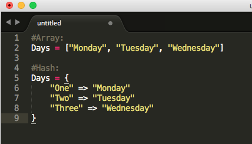

DBC Week 2 Technical Blog Post
Ruby: Array and Hashes
February 21, 2015
In ruby, both array and hashes are indexed collection. Both store collections of objects, accessible using a key. In an array, the objects are indexed with integers starting at 0. In comparison, a hash is indexed is done through arbitraty keys of any object type. Hashes display their values in the order that the corresponding keys were inserted.
When you want to call the object in arrays, you can simply type Days[1] and it would display "Tuesday". (Remeber that in Ruby arrays start with 0). If you wanted to recall "Tuesday" with a Hash, you would use the key value instead of the index number. So Days["Two"] would return "Tuesday".
The basics of Hashes and Arrays are pretty straightfoward. Both are them are essentially the same concept, but use different types of keys to recall an object. Hashes use key values, while Arrays use the index numbers. It's more efficient to access array elements, but hashes provide more flexibility. When you want to use either a hash or an array is up to you!